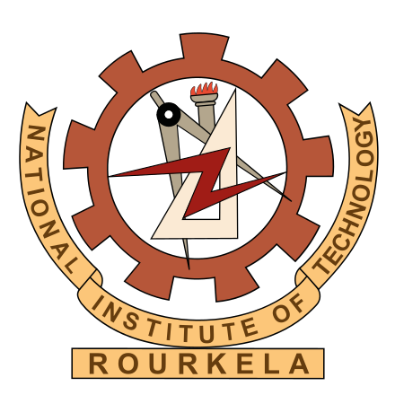

I am a Computer Science and Engineering graduate of the National Institute of Technology Rourkela (B.Tech awarded May 2026; CGPA 9.55/10, rank 3 of 149). I am interested in performance-aware distributed systems and communication-efficient AI: how data moves over wide-area networks, and how machine learning workloads can run efficiently on constrained hardware. My work so far covers a delay-based congestion-control algorithm for high bandwidth-delay-product links and a fully offline voice assistant running on a Raspberry Pi and a Jetson Orin Nano.
My bachelor thesis, supervised by Prof. Anup Nandy in the Machine Learning and Robotics Lab at NIT Rourkela, built a multithreaded, event-driven voice pipeline (whisper.cpp, llama.cpp, Piper TTS) that runs fully offline on edge hardware. In summer 2025, I interned at Wells Fargo International Solutions, where I worked on Java and Spring Boot backend services and wrote automated tests with Cucumber and Gherkin.
For more details, see my CV or send me an email.
- Wide-area transport: congestion control for high bandwidth-delay-product networks, parallel streams, and latency–reliability trade-offs.
- Systems support for efficient ML: concurrency, memory and quantization trade-offs of on-device inference.
- Privacy-preserving ML: resource-constrained learning and inference on embedded and sensing devices.
CGPA 9.55/10, rank 3 of 149.
Systems and networks: Operating Systems, Distributed Systems, Computer Networks,
Next Generation Networking Systems (SDN, NFV, QoS, cloud and edge networking),
Database Engineering, Intrusion Detection Systems.
Machine learning: Machine Learning, Deep Learning, Natural Language Processing, Computer Vision.
Foundations: Probability & Statistics, Linear Algebra & Matrix Theory, Computer Architecture.
- Graduated 3rd of 149 in the B.Tech program, Dept. of CSE, NIT Rourkela (CGPA 9.55/10).
- Study in India Scholarship: partial funding of the B.Tech. for four years, awarded on performance in the Ind-SAT (PRAGATII) examination.
- Academic Excellence Award, 3rd rank across 6 semesters, Dept. of CSE, NIT Rourkela (August 2025).
- Academic Excellence Award, 3rd rank across the first 4 semesters, Dept. of CSE, NIT Rourkela (September 2024).
- Completed the Deep Learning Specialization (Coursera / DeepLearning.AI), November 2025.
Real-Time Edge Conversational AI System
- Designed a multithreaded, event-driven pipeline (wake word, whisper.cpp ASR, llama.cpp LLM, Piper TTS) with queue-based buffering, silence-based turn detection and chunked token streaming. It runs fully offline on a Raspberry Pi 4B (4 GB) and an NVIDIA Jetson Orin Nano (8 GB), so no audio or text leaves the device.
- Benchmarked inference performance: on the 4-core Pi, token generation stayed flat at about 7 tokens/s from 2 to 4 threads, so I fixed the inference engine at 2 threads. Pi: 5.5 s time to first token, 18 s end-to-end. Jetson (Gemma 3 1B): 4.1 s and 14 s.
- Analyzed the memory budget (peak 1.8–2.2 GB of 4 GB on the Pi, with ASR the largest consumer) and the accuracy–resource trade-off of Q4_K_M quantization: Qwen2.5-0.5B shrank from 943 to 463 MiB and generation rose from 5.3 to 7.0 tokens/s, at +17% WikiText-2 perplexity.
- Troubleshot and tested backend services (Java, Spring Boot) for a content management system project.
- Implemented automated tests for internal workflows with Cucumber and Gherkin, improving regression test efficiency within the agile sprint cycle.
- Implemented Elastic-TCP (Alrshah et al., IEEE Systems Journal, 2019), a delay-based congestion-control algorithm for high bandwidth-delay-product wide-area links, as a Linux-style TCP module in NS-2.
- Reproduced and validated its window dynamics under simulated long-delay conditions.
- Built a full-stack 3D face-mesh identification system with a React frontend, FastAPI backend and a custom inference pipeline.
- Integrated 3D face reconstruction models (MICA, OFER) to register and compare meshes in 3DMM (FLAME) parameter space, with automated mesh storage and 3D visualization using Three.js.
- Systems & Networking: Linux, C, C++, Bash, Docker, NS-2, Tcl
- Machine Learning: PyTorch, TensorFlow, llama.cpp (GGUF quantization)
- Other: Python, Java, SQL, React, FastAPI, Spring Boot, Git/GitHub, LaTeX
